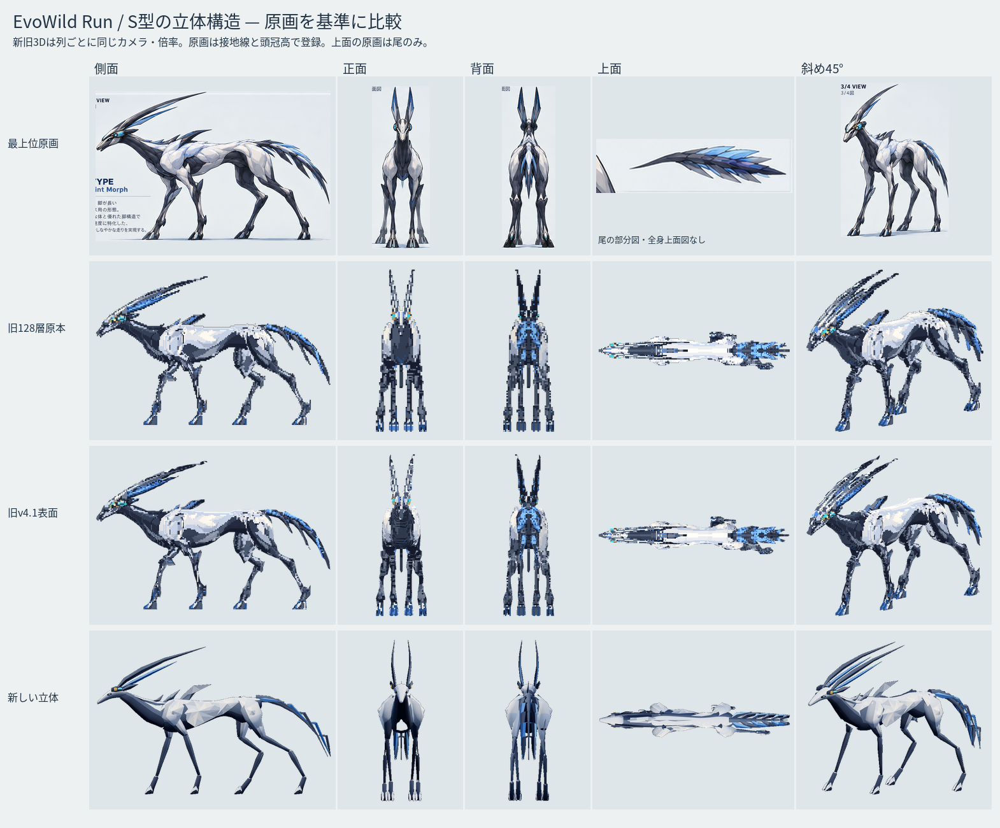
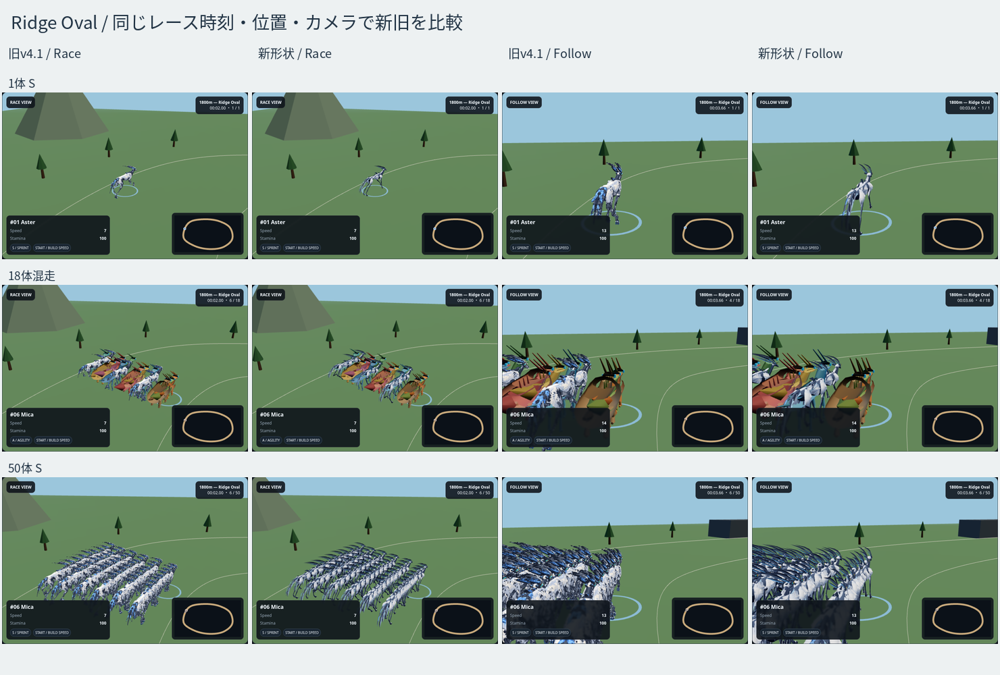

S型の立体構造を修正する
REVISE — 胸・肩・腰の厚みと四脚の区別を改善。原画の面の流れ、肩と胸の接続、尾の重なりには差が残るため、主役としての採用は未確定です。
最上位原画と新旧の5方向
旧128層・旧v4.1・新メッシュは列ごとに同じカメラと倍率。原画の上面は尾だけです。原画との視覚的な差を残したまま、数値で合格とはしません。

実際のRidge Oval

実物の回転と走行
ブラウザのWebGL画面を実時間で収録しました。SwiftShaderで50体を収録した動画は更新が少なく、滑らかな実機動作の証拠にはなりません。
turntable · 実時間収録 83描画 / 12.00秒gallop · 実時間収録 83描画 / 10.14秒ridge-1 · 実時間収録 65描画 / 10.00秒ridge-18 · 実時間収録 36描画 / 10.23秒ridge-50 · 実時間収録 12描画 / 10.62秒
編集と再検証
GLB形状データ · 断面・部位・24位相 · レース状態回帰 · 操作と変形頂点の検査 · 旧資産保持・ハッシュ · 動画の収録時刻
保存済みの旧原本、旧24姿勢、旧レンダラーは保持しています。修正版の表示切替はレースの順位・速度・進路・カメラを変更しません。